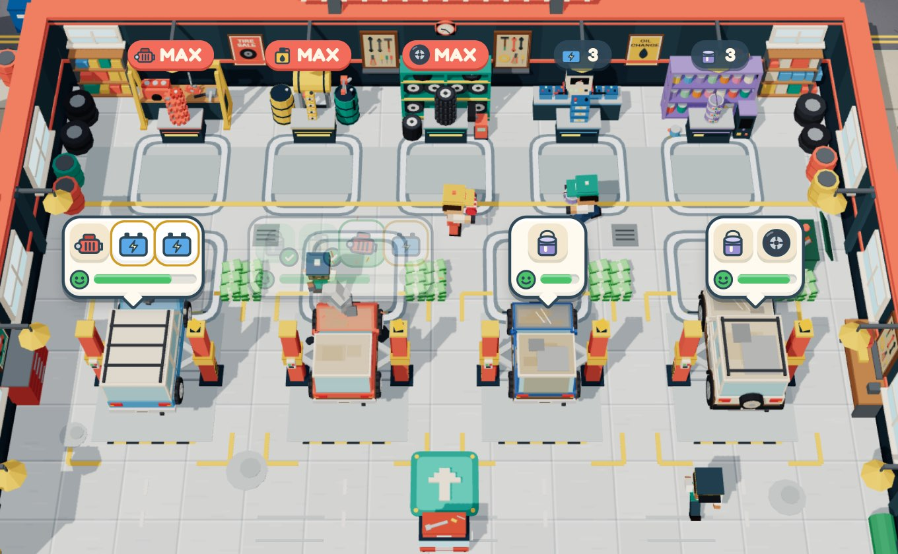
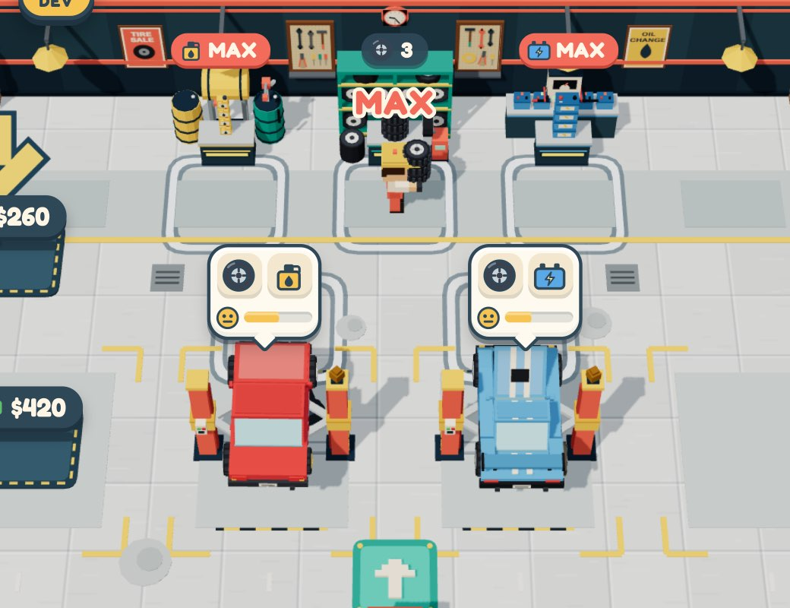
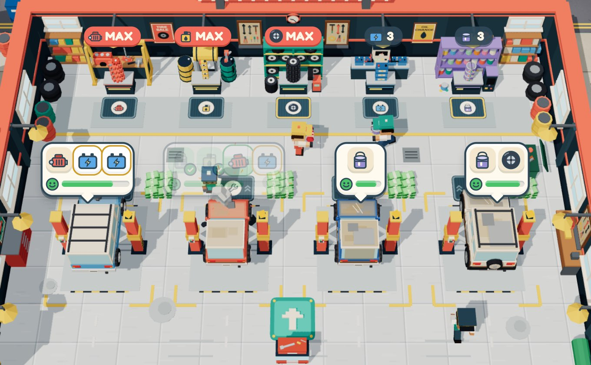
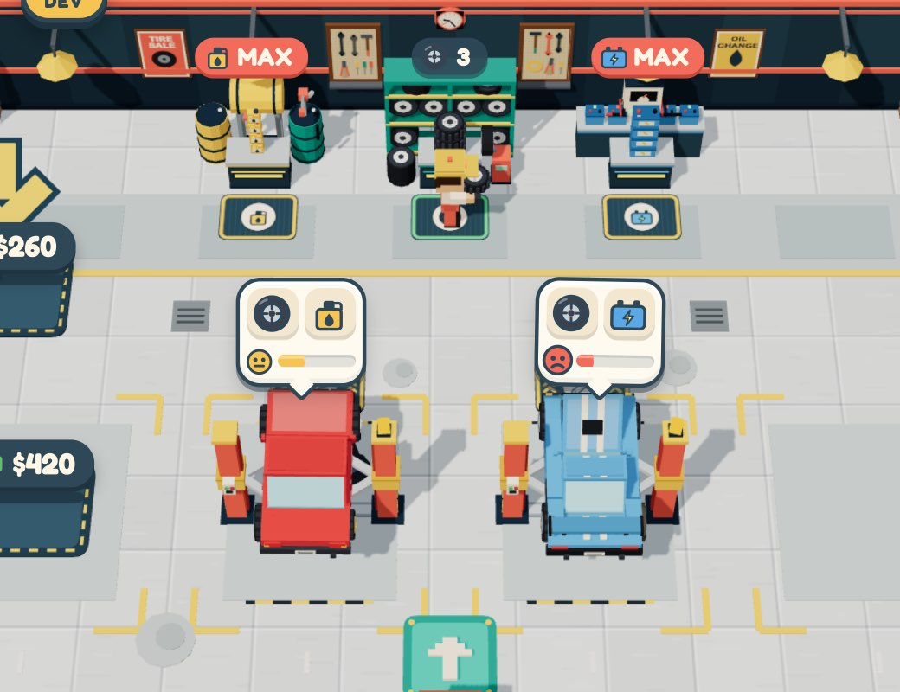
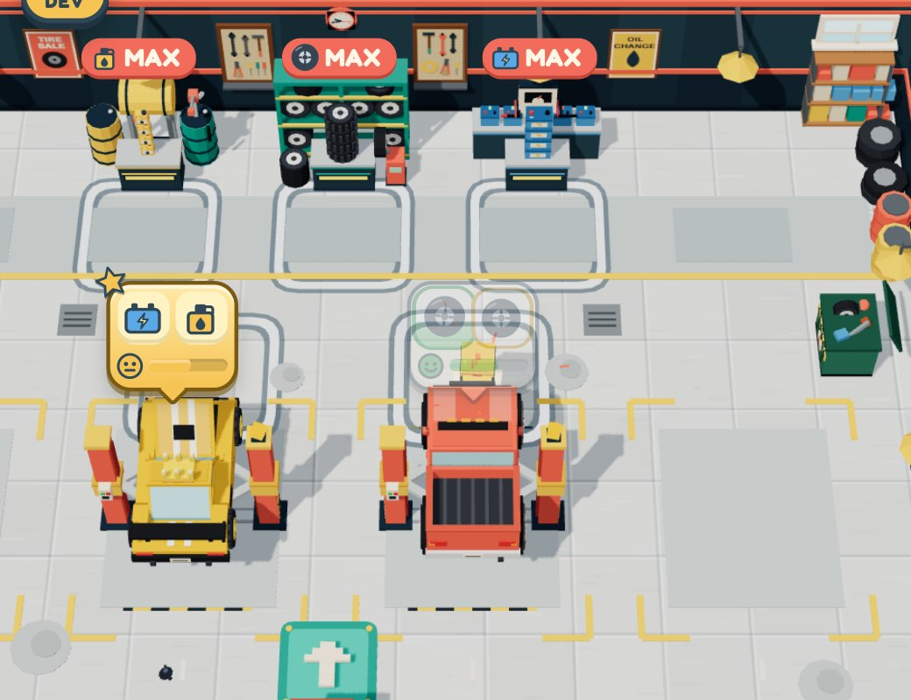
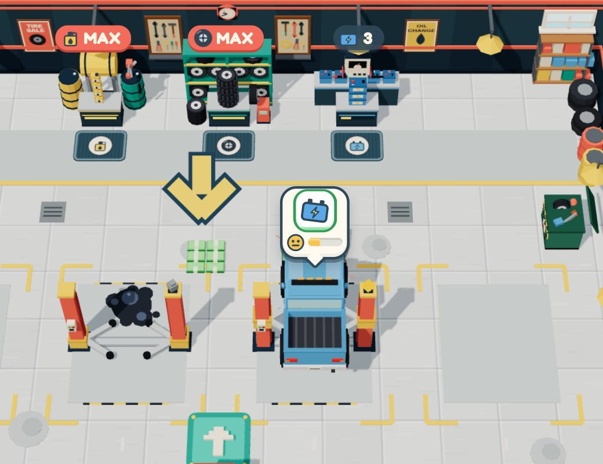

Small mats instead of big boxes, and you only get the parts the lifts need
The floor boxes in front of the shelves and the lifts were about three players wide and covered most of the hall. A shelf also emptied into your hands as fast as it could: if a car needed 1 tyre and 1 oil, you left the tyre box holding 3 tyres, with no hand left for the oil. Now a small mat at each counter and in front of each car's nose replaces the boxes. Each mat gives the parts the cars on the lifts are waiting for, then stops. Want more? Stand still and a ring fills, one extra part at a time. At the lift you repair only while standing still, and the job bubble stays solid while you repair.
1What went wrong


- Boxes are huge. Shelf boxes are 2.2 m wide and lift boxes 2.3 m. The player is 0.7 m wide, so each box is three players across.
- No floor between them. Shelf boxes end 0.5 m before the lift boxes start, so the only walkway in the hall runs through them.
- The shelf empties into you. One part every 0.14 s while you are inside. 3 hands fill in 0.42 s, faster than you can step off.
- Walking past takes parts. Crossing a box on the way to another shelf also fills your hands with parts you didn't want.
2The design: a mat where you stand
A rubber mat at each counter (1.3 × 0.95 m) and a work mat at each car's nose (1.5 × 1.0 m). Like the anti-fatigue mats in front of a real workbench. Same moment, same camera.


Shelf mat: every state
Lift work mat (only while a car is on the lift)
- a car on a lift is still waiting for that part,
- nobody is already bringing it (a mechanic hasn't gone for it, and it isn't already in your hands),
- you have a free hand.
3How picking up works
- The mat gives what's needed, fast. At the usual speed (0.14 s a part) until you hold as many as the cars on the lifts are waiting for. That count leaves out parts a mechanic is fetching and parts already in your hands.
- It keeps a hand free for the other parts. If another part is also needed, the mat stops one short so you have a hand for it. A needed part always gives at least one.
- Want more? Stand still. After 0.8 s a yellow ring starts to fill on the mat. Every 1 s you get one more part. Step off to stop. This is how you stock up before cars arrive.
- Walking past takes nothing extra. Crossing a mat only gives you parts that are needed. Extra parts only come while you stand still.
- The lift mat takes the parts on the way. Step onto it and every part the car needs flies in, even while you walk across. It is smaller and closer to the car (0.35 m from the bumper).
- Repairs only while you stand still. The wrench starts 0.15 s after you stop on the mat. Move and the repair pauses. Turning round on the spot is not a stop.
- The job bubble stays solid while you repair. Bubbles still fade when they cover your character, so you can see yourself walk. While you repair that car, its bubble stays opaque so you can read the progress. Start moving and it fades again.
- Mechanics are not affected. They still fetch for their own lift. The parts they claimed don't count as needed for you.
Repairing: the bubble stays readable


The case you hit: the lift wants 1 tyre + 1 oil, you have 3 hands
BEFOREBoxes, the shelf empties into you
AFTERMats, only what's needed
| The lifts need | Before (3 hands) | After (3 hands) |
|---|
4Try it
The real game, on its own save slot (your progress is not touched). An early garage: 2 lifts, the tyre / oil / battery shelves, a valet who parks the cars, no mechanics, 3 hands. No random cars arrive. Add the cars you want to test.
Add a car
Tools
Click the game first, then walk with WASD or the arrow keys (or drag on it). The valet drives each new car onto a free lift.
5Decisions
- Keep a hand free: yes. Lifts want 3 tyres and 1 oil: you get 2 tyres + the oil, so one car finishes on the first trip.
- Extra parts: 1 s each, after 0.8 s still. The first extra comes 1.8 s after you have what's needed: slow enough that you never take one by accident, quick enough to stock up 3 hands in about 4 s.
- Lift mat in front of the nose. From far away it sits under the job bubble, which fades as you walk up. The bubble already marks the lift, and the nose is where a mechanic would stand.
- Repair only while standing still, and the bubble stays solid while you repair.
6What it touches
src/models/mats.js:createFloorMat(w, d, { icon, tint, kind }): a 4 cm rubber slab with a canvas-texture face, states, glowsrc/models/mat-face.js: draws the face (rim, icon chip, ring, tick); this page's gallery uses it toosrc/game/stations.js: the mat replaces the zone ring;neededParts()and the pickup rulessrc/game/lifts.js: the work mat,playerCanWork()(still on the mat), the solid job bubblesrc/game/paint.js: the same in the Spray Bay (spray only while still; the tank mats show a can in the tank's colour)src/game/player.js:player.speed,player.stillTsrc/ui/labels.js,src/game/util.js:setSolid()on bubbles,onMat()src/config.js/config.town.js:stationMat,liftWorkMat/workMat, offsets,pickupExtraWait,pickupExtraInterval,PLAYER.stillSpeed/stillTime/matReachsrc/models/environment.js: the painted grey pad under each station is gone (the mat replaces it)